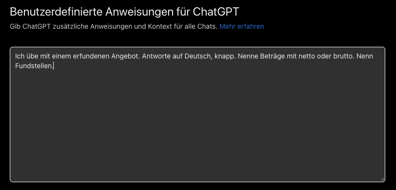
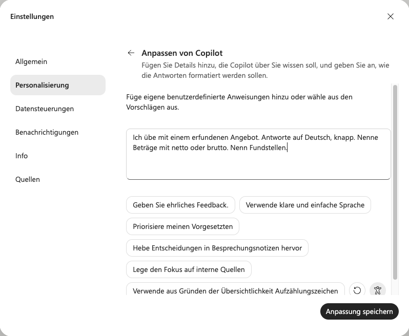
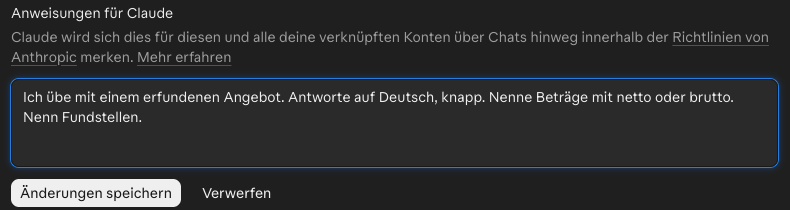

Eine Daueranweisung geben
Danach kannst du der KI einmal sagen, was sie über dich und deine Arbeit immer wissen soll, und weißt, was nicht hineingehört.
Etappe 4 · Ein Gedächtnis geben- 1Eine Daueranweisung geben
- 2Ein Projekt für wiederkehrende Aufgaben
- 3Vorlagen ablegen und Regeln fürs Team
Daueranweisung und Gedächtnis
Daten: im Job nur das Arbeitskonto, im Zweifel nichts Echtes hochladen, sondern beschreiben. Mehr in Etappe 1, Einheit 2
1Ein Beispiel
Sabine aus dem Einkauf wiederholt in jeder Anfrage dasselbe: wer sie ist, netto und brutto getrennt, Fundstellen. (Erfunden.) Jetzt schreibt sie es einmal als Daueranweisung, im Arbeitskonto:
Dann stellt sie in einem neuen Chat dieselbe Testfrage: „Fasse dieses Angebot zusammen.“
Langer Fließtext, Preise ohne netto oder brutto, keine Fundstellen.
Kurz, Preise mit „netto“, je Punkt die Fundstelle, ohne dass Sabine es dazuschreibt.
Was nicht hineingehört
- Andere MenschenKeine Namen von Kollegen, Kunden oder Familie.
- VertraulichesKeine Preise, Verträge oder Pläne der Firma.
- ZugängeNie Passwörter, PINs oder Zugangsdaten.
- GesundheitKeine Angaben zu Krankheiten.
Faustregel: In die Daueranweisung gehört nur, was auch auf einem Zettel an deinem Bildschirm stehen dürfte.
2Selbst ausprobieren
Privat oder Arbeit? Im Privatkonto schreibst du nur eine Daueranweisung für private Aufgaben oder eine Übungsfassung wie hier. Die Fassung für die Arbeit gehört nur ins Arbeitskonto. Schalte, wenn möglich, die Nutzung deiner Chats fürs KI-Training aus, meist in den Einstellungen unter „Datenschutz“ oder „Datenkontrollen“.
Zur Erinnerung: Die drei Sätze aus Etappe 1 beschreiben eine einzelne Aufgabe, die Lage aus Etappe 2 sagt, worum es gerade geht. Beides bleibt in der Anfrage. In die Daueranweisung kommt nur, was du jedes Mal wiederholst: Rolle, Ton und die Regel für Zahlen.
- Testfrage stellen, bevor du etwas einträgst: Häng das Kopierer-Angebot an und schreib „Fasse das Angebot zusammen.“ Heb die Antwort auf.
- Daueranweisung schreiben. Vorlage kopieren, Klammern ausfüllen, ohne Namen.
- Eintragen. Wo das geht, zeigt der Reiter für dein Werkzeug.
- Neu fragen und vergleichen: neuer Chat, dieselbe Testfrage mit dem PDF.
Ich arbeite als [Rolle] im Bereich [Bereich, ohne Firmennamen]. Ich brauche oft: [deine typischen Aufgaben]. Antworte [Sprache, Länge, Ton]. Nenne Zahlen immer mit dem, was dabeisteht (netto oder brutto, Wochen, Monate). Bei Angaben aus Dokumenten nenn die Fundstelle. Wenn du etwas nicht weißt, sag es.
Wähle dein Werkzeug: Tippe auf den Namen, den du benutzt. Die Anleitung darunter wechselt.
In den Einstellungen unter „Personalisierung“ steht das Feld „Benutzerdefinierte Anweisungen“. Dort trägst du ein, was ChatGPT über dich wissen und wie es antworten soll. Was ChatGPT sich selbst gemerkt hat, findest du unter „Speicher“ (nicht selbst nachgeprüft). Einzelne Einträge kannst du löschen oder das Gedächtnis ganz abschalten.
Für einen Chat ohne Gedächtnis nimmst du „Temporärer Chat“, wie beim Gegenlesen in Etappe 3. Die Daueranweisung gilt dort wohl weiter (nicht selbst nachgeprüft), schreib deshalb keine Absicht hinein, etwa „finde meine Entwürfe gut“.

Auch der private Copilot hat ein Feld dafür: Einstellungen, dann „Personalisierung“, dann „Anpassen von Copilot“. Dort schreibst du die Anweisung hinein oder wählst einen der Vorschläge.
Ob Copilot frühere Chats einbezieht, ist eine eigene Einstellung. Dort siehst du Gemerktes, löschst es oder schaltest es ab. Im Firmen-Copilot hängt das von Tarif und Firmeneinstellung ab.

Bei Gemini trägst du unter „Gespeicherte Infos“ selbst ein, was es wissen soll. Ob es frühere Chats einbezieht, ist eine eigene Einstellung, die du abschalten kannst.

Bei Claude trägst du in den Einstellungen unter „Konto“ in das Feld „Anweisungen für Claude“ ein, was in jedem Chat gelten soll. Das Gedächtnis hat in den Einstellungen einen eigenen Punkt „Gedächtnis“: Dort siehst und änderst du das Gemerkte oder schaltest es ab. Im kostenlosen Konto ist das Gedächtnis laut Anthropic von Anfang an eingeschaltet. Hilfeseite bei Anthropic
Für einen Chat ohne Gedächtnis nimmst du den Inkognito-Chat, das Geistersymbol oben rechts. Deine Anweisungen gelten dort laut Anthropic weiter.

Stand: November 2026. Die Felder für Anweisungen in ChatGPT, im privaten Copilot und in Claude haben wir am 10. und 11.11.2026 selbst gesehen. Gemini und die übrigen Menüpfade haben wir nicht nachgeprüft.
Wenn es hakt
- Du findest das Feld nicht: Menüs ändern sich oft. Such in den Einstellungen nach „Personalisierung“ oder „Anweisungen“.
- Die KI hält sich an etwas Altes: Sieh in der Daueranweisung, im Gedächtnis und bei Projekten im Projektgedächtnis nach und lösch, was nicht mehr stimmt.
- Die KI beachtet nur einen Teil: Kürz die Anweisung auf wenige Sätze und streich, was sich widerspricht (Faustregel).
Die neue Antwort folgt deinen Vorgaben: Ton, Länge, netto oder brutto. Sieht sie aus wie vorher, prüf, ob die Anweisung gespeichert ist und ob du einen neuen Chat geöffnet hast.
3Prüfen: drei Handgriffe
Die drei Handgriffe bleiben, im Wortlaut in Etappe 3, Einheit 1. Eine Daueranweisung ersetzt das Nachsehen nicht. Neu in Etappe 4 kommt dazu:
- EinsehenSchau ab und zu nach, was das Werkzeug sich gemerkt hat. Faustregel: einmal im Monat.
- AufräumenLösch, was nicht mehr stimmt. Steht im Gedächtnis deines Privatkontos etwas aus der Arbeit, lösch es.
4Selbstcheck
Darf dein Passwort fürs Intranet in die Daueranweisung, damit du es nicht vergisst?
Nein. Zugangsdaten gehören nie in ein KI-Werkzeug.
Seit deinem Wechsel in eine neue Abteilung passen die Antworten nicht mehr. Woran kann das liegen?
An einer alten Daueranweisung oder einer Erinnerung, die still weiter gilt. Sieh nach und lösch, was nicht mehr stimmt.
Aus Etappe 3: Warum nimmst du zum Gegenlesen einen Chat ohne Gedächtnis?
Damit die KI deine Absicht nicht kennt. Kennt sie sie, neigt sie dazu zuzustimmen.